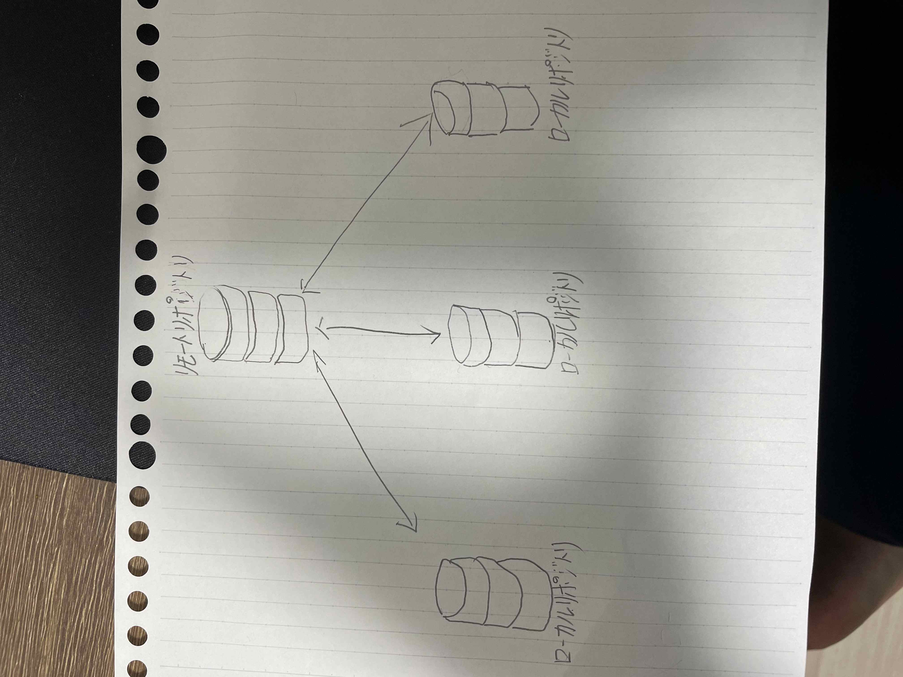

デザイン演習 第１回 まとめ
gitへの理解を深める
- 解釈
簡単に言うと”ファイルの*バージョン管理が簡単にできるツール”
難しく言うと”分散型バージョン管理システム”
のこと
*バージョン管理とは履歴の管理のこと
- ではgitでは何をすることができるのだろうか
1,いつでもバックアップに復元できる
2,同じファイルを触っても上書きにならない
3, 誰が、いつ、どのファイルに、どんな編集をしたかが管理できる
- gitを知る上で必須の言葉”リポジトリ”
リポジトリとは、ファイルや履歴を保存するためのストレージのこと
→簡単に言うと保管庫のようなもの

*リモートリポジトリとは他の人のpcの中にある保管場所
*ローカルリポジトリとは自分のPCの中にある保管場所
参考ページ
【初心者向け】GITとは何か？GITの概念を解説
HTMLへの理解を深める
- HTMLとは
HTMlとは”Hyper Text Markup Language”の略
マークアップ言語に分類される
*マークアップ言語とは「文章を構造化」する言語のこと
- HTMLタグについて
HTMLタグとはウェブページの構造や内容を定義するための重要な要素のこと
タグは基本的に＜タグ名＞と＜/タグ名＞で囲まれた形式で記述される
開始タグと終了タグで内容を囲むことで、その範囲に特定の意味や機能を付与できる
- HTMLタグ例
1,htmlタグは、HTML文書のルート要素を表すタグ
2,headタグは、ウェブページのメタデータを格納するためのタグ
3,titleタグは、ウェブページのタイトルを指定するタグ
4,bodyタグは、ウェブページのコンテンツ部分を定義するタグ
5,imgタグは、画像を表示するためのタグ
6,aタグは、リンクを定義するためのタグ
7,lタグとliタグは、箇条書きのリストを作成するためのタグ
8,olタグは、番号付きリストを作成するためのタグ
9,divタグは、コンテンツをグループ化し、スタイルを適用するためのタグ
10、styleタグは、ウェブページ内にCSSスタイルを記述するためのタグ
参照ページ
HTMLタグとは？基本構造と役割をやさしく解説【初心者向け入門】
デザイン演習Ⅰ・Ⅱトップページ
XBPトップページ